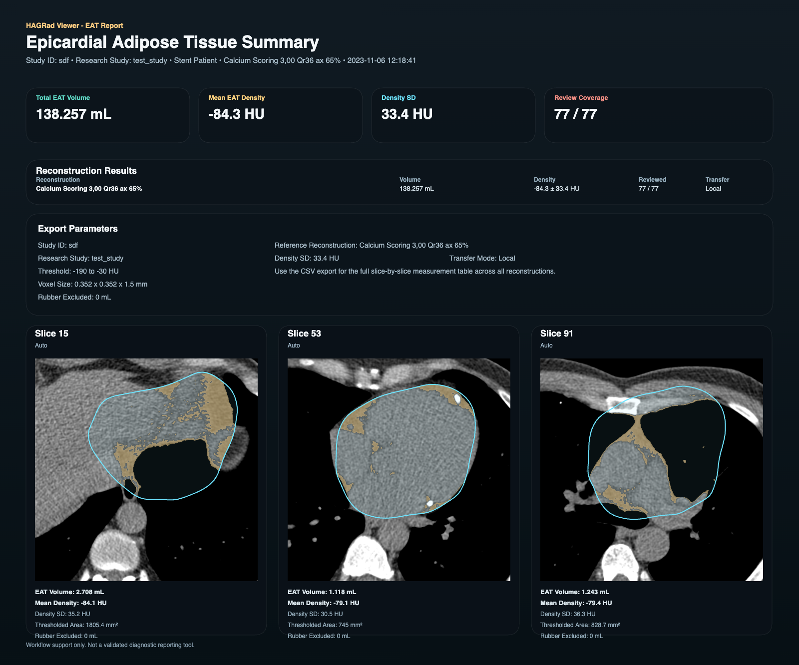
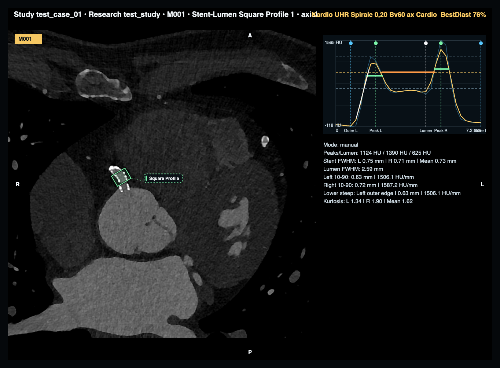
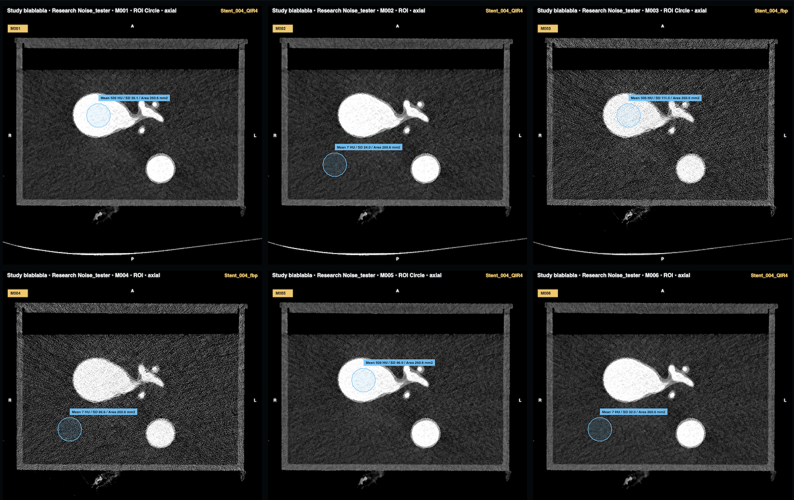
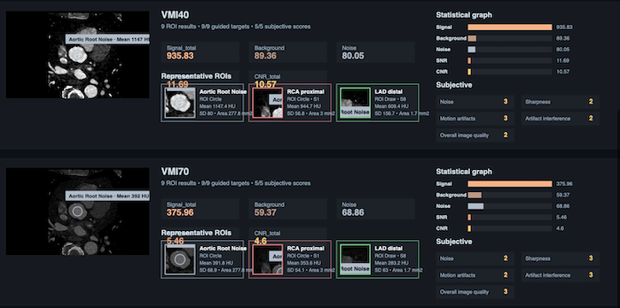
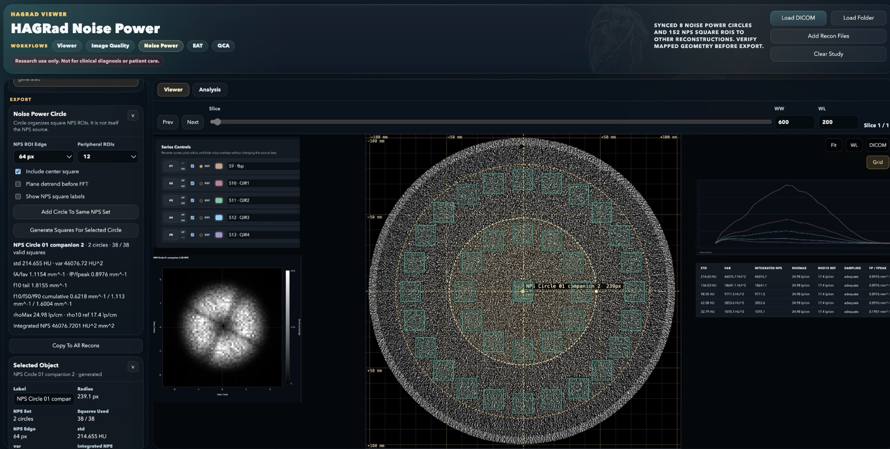
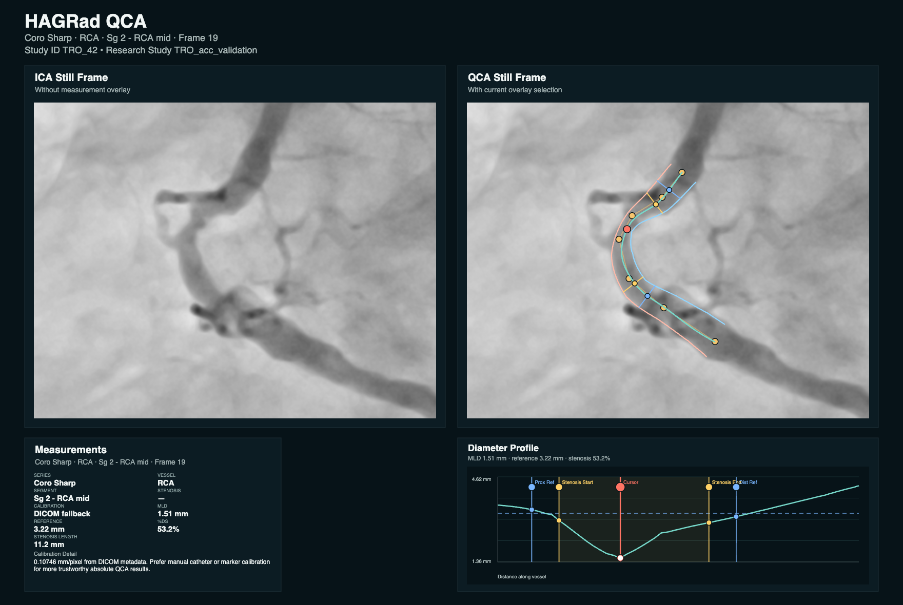
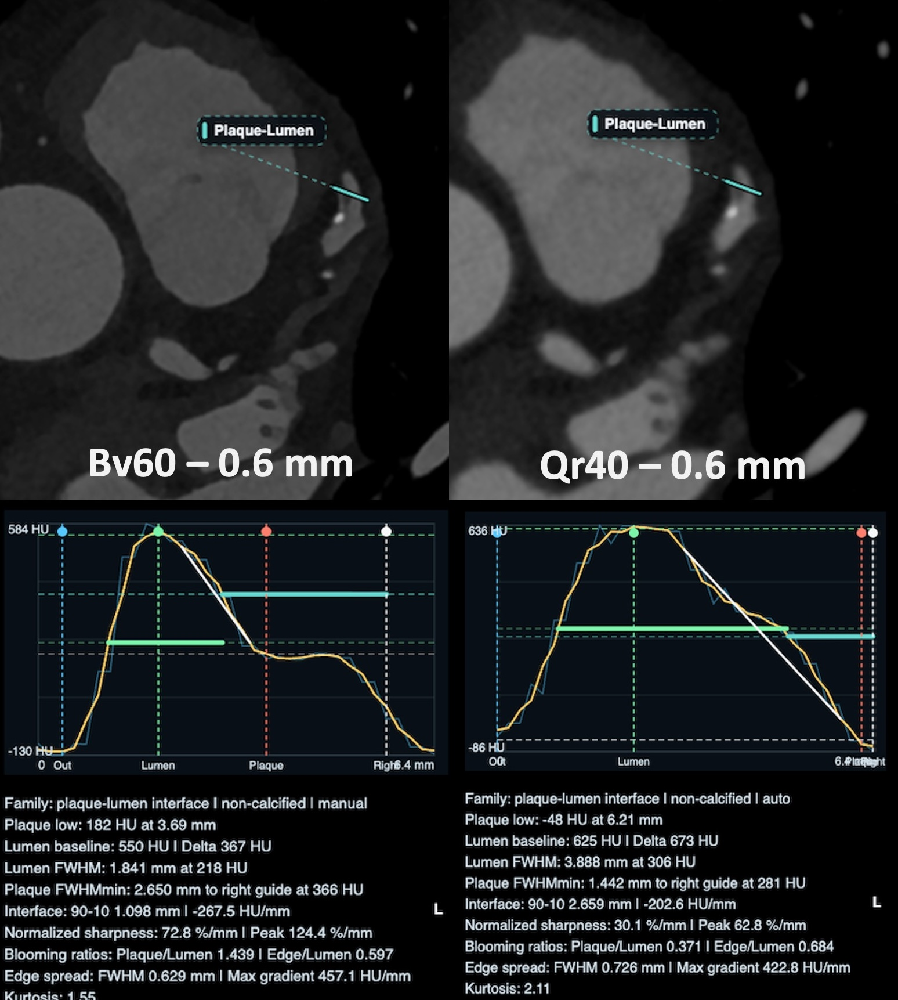

Core DICOM Viewer
DICOM review with window/level, zoom, pan, MPR, vessel profile, blooming/stenosis diameter tools, and ZIP exports.
Radiology research software
Heart Analysis Gateway for Radiologic Research and Development
An open-source local DICOM research environment for image review, multi-planar reformation, quantitative measurement, reconstruction comparison, image-quality analysis, QCA prototyping, EAT quantification, and CT phantom noise-power research.
Research Use Only. This software is not intended for clinical diagnosis, treatment decisions, or patient care.
Modules
The core viewer stays familiar while specialized measurements are separated into modules that can evolve independently.
DICOM review with window/level, zoom, pan, MPR, vessel profile, blooming/stenosis diameter tools, and ZIP exports.
Objective coronary CTA ROI measurements, subjective reader scoring, editable protocols, SNR/CNR metrics, and structured export.
CT phantom square ROI statistics, circular NPS placement, multi-reconstruction noise-power comparison, TTF metrics, and export bundles.
Pericardial contouring, HU thresholding, multi-reconstruction comparison, and measurement export for EAT research.
Invasive angiography frame selection, vessel segmentation workflow, stenosis measurements, and research export bundles.
Screenshots
Representative screenshots show how image review becomes structured research output.

Epicardial adipose tissue summary report with volume, density, review coverage, and segmented representative slices.

Axial CT review with editable measurement overlays and quantitative stent-lumen profile analysis.

Objective image-quality comparison across coronary CTA reconstructions using ROI attenuation and noise measurements.

Per-reconstruction output with representative ROIs, objective signal/noise graphs, and subjective quality scoring.

CT phantom NPS workflow with synced circular ROI placement, square sampling, reconstruction comparison, and export-ready noise-power metrics.

Still-frame invasive angiography analysis with vessel overlay, stenosis measurements, and diameter profile output.

Line-profile analysis of the plaque-lumen interface to compare non-calcified plaque appearance across reconstruction kernels.
Demo video
Case demonstrations showing imaging analysis workflows in action.
Review the workflow directly on the page or open the video file for full-screen playback.
Review the quantitative coronary angiography workflow directly on the page or open the video file for full-screen playback.
Downloads
Choose the package for your research workstation. HAGRad Viewer runs locally, keeps DICOM files on your computer, and opens from one app icon after download.
Download file: HAGRad-Viewer-macOS.dmg
HAGRad Viewer.app.No Python, Terminal, OpenSSL, or Apple Command Line Tools are required for normal use.
Download file: HAGRad-Viewer-Windows.zip
HAGRad Viewer.exe.The executable bundles the launcher runtime, starts the local server, and uses localhost HTTP when HTTPS certificates are unavailable.
Use GitHub releases for release notes, source archives, demo media, license information, and earlier research-preview builds.
The packaged downloads are intended for normal users; source archives are intended for developers and reviewers.
Research use only. HAGRad is not a clinical product or medical device.
If launch fails, the app displays a message and writes logs to
~/Library/Logs/HAGRad Viewer/ on macOS or
%LOCALAPPDATA%\HAGRad Viewer\logs\ on Windows.
Citation
A manuscript citation and DOI will be added once available.
Hagar T. HAGRad: Heart Analysis Gateway for Radiologic Research and Development.
Version 0.9.0 research preview. 2026.
Repository: https://github.com/mt-hagar/hagrad-viewerOur mission
Heart Analysis Gateway for Radiologic Research and Development (HAGRad) was developed as an open-source platform founded on the belief that advanced radiology research and education can become more accessible, reproducible, collaborative, and engaging. Built through more than 1,000 hours of development, refinement, debugging, testing, and real-world research use, the platform was designed to inspire and empower the next generation of researchers, physicians, engineers, and students by transforming complex image analysis into structured, supervised, and educationally meaningful research experiences.
Through synchronized reconstruction comparison, quantitative quality-control workflows, exportable structured outputs, and transparent analytical pipelines, the platform aims to modernize mentoring, facilitate scientific onboarding, and foster reproducible research practices within radiology and imaging science. By combining open-source accessibility with educational and research-oriented workflow design, the project seeks to accelerate innovation in imaging science while strengthening mentorship, collaboration, and long-term engagement in academic radiology and imaging research.
Please feel free to contact us with any questions, ideas, feedback, or interest in collaboration. If you would like to support our mission and the continued development of open-source radiology imaging research tools, please consider using the Support button to buy us a coffee. Thank you for supporting independent scientific innovation and education.